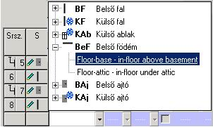
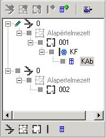
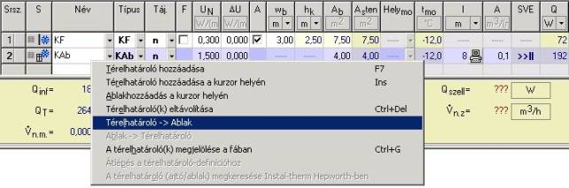

2.6.4. A térelhatárolók leírása – térelhatárolók beállítása és azonosítása
Az újonnan létrehozott „táblázatos” helyiségnek kezdetben nincs hûtõ térelhatárolója. Ezeket tetszõleges sorrendben be kell tenni az F7 vagy az INS billentyû megnyomásával (a térelhatárolók táblázatában) vagy a „Térelhatároló hozzáadása” ikon segítségével, illetve esetleg a felbukkanó menübõl (az épületstruktúra fájában). Az új térelhatárolókat le kell írni (azonosítani kell). A térelhatároló azonosításához az adatait be kell írni a táblázatba. Ezek mindeneke elõtt: a térelhatároló neve, típusa és az égtájakhoz viszonyított tájolása, az UN normatív hõátbocsájtási tényezõ értéke, a térelhatároló méretei vagy felülete, valamint a belsõ térelhatároló túloldalán található környezet vagy a hõmérséklet megadása.
Az UN normatív hõátbocsájtási tényezõ értékét kétféle módon lehet beírni, a térelhatároló definiálásának módjától függõen. A térelhatárolókat a „Térelhatároló-definíciókban” lehet meghatározni, vagy meg lehet õket adni közvetlenül az „Épületstruktúrában”, a térelhatárolók táblázatában.
Ha a
felhasználó a térelhatárolót a „Térelhatároló-definíciókban” határozta meg,
akkor a „Név” oszlopban a  nyomógomb
segítségével legördíthetõ listában deklarálhatja a definiált térelhatároló
használatát. Az ilyen térelhatárolót meg lehet hívni a Ctrl+Enter billentyûk segítségével is, vagy a nevének beírásával.
nyomógomb
segítségével legördíthetõ listában deklarálhatja a definiált térelhatároló
használatát. Az ilyen térelhatárolót meg lehet hívni a Ctrl+Enter billentyûk segítségével is, vagy a nevének beírásával.

! Mivel a térelhatároló definíciója egy meghatározott néven van megadva ezért a megadott térelhatároló nevének kiválasztásával kiválasztjuk magát a definícióját.
Ha beírjuk (vagy meghívjuk) egy olyan térelhatároló nevét, amely már a „Térelhatároló-definíciókban” meg lett határozva, akkor azt a program megkeresi, és maga írja be a térelhatárolók táblázatának oszlopába a hõátbocsájtási tényezõ értékét és a térelhatároló típusát. Beírandók még a térelhatároló felülete (ha korábban nem adtuk meg), és az égtájakhoz viszonyított tájolása. Ha a felhasználó meg akarja változtatni a definiált térelhatároló tulajdonságait, azt a név megváltoztatásával teheti meg. Ezzel azonban megszûnik a kapcsolata a definíciójával, és végeredményben elvész a szezonális energiaigény kiszámításának a lehetõsége. Ezért a már definiált térelhatárolók szerkesztését a „Térelhatároló-definíciókban” kell elvégezni anélkül, hogy elveszítenénk a szezonális energiaigény számításának lehetõségét.
! A „Térelhatárolódefiníciókban” meghatározott térelhatároló nevének megváltoztatásával a felhasználó azt tetszõlegesen szerkesztheti az épület struktúrájában, jóllehet ugyanakkor elveszíti a szezonális energiaigény számításának lehetõségét, mivel hiányozni fognak adatok.
Ha korábban nem deklaráltuk a térelhatárolót, akkor azt azonnal deklarálni lehet a térelhatárolók táblázatában minden adat beírásával. A felhasználónak be kell írnia a térelhatároló nevét, ki kell választania a típusát, meghatározni az orientációját, az UN normatív hõátbocsájtási tényezõ értékét, valamint a térelhatároló méreteit. Ezeket az adatokat be kell írni, vagy ki kell választani listából a megfelelõ oszlopban. Az így meghatározott térelhatárolót szabadon lehet szerkeszteni, úgy a helyiség nézetében, a helyiség táblájában, mint az "Épületstruktúra : Térelhatároló” szerkesztõablakban. Az említett ablakok közötti átkapcsoláshoz a Ctlr+G billentyûkombináció szolgál.
A térelhatároló szerkesztõ ablakának meghívását a felhasználó hasonló módon teheti meg, mint az épületszint, a lakás és a helyiség szerkesztõ ablakában. Így tehát az épületstruktúra fájában a kiválasztott térelhatároló kijelölése a jobb oldalon meghívja az „Épületstruktúra: Térelhatároló” térelhatároló szerkesztõ ablakot.
! Ha a térelhatárolók közvetlenül az épületstruktúrában lettek definiálva, a program nem számítja ki a szezonális energiaigényt, a térelhatároló felépítésére vonatkozó elégtelen számú adat miatt.
A térelhatároló-szerkesztõ ablakot a felhasználó ugyanolyan módon tudja meghívni, mint az épületszint, lakás és a helyiség szerkesztõ ablakát. Így tehát az épületstruktúra fájában a kiválasztott térelhatároló kijelölése megjelenteti a jobb oldalon az „Épületstruktúra : Térelhatároló” szerkesztõablakot.
A belsõ térelhatárolóknál a térelhatároló másik oldalán levõ helyiséget a „Helyds” oszlopban megjelenõ listából lehet kiválasztani. Elég csak egy alkalommal betenni a belsõ térelhatárolót és megadni a szomszéd helyiséget. A program automatikusan hozzárendeli a belsõ térelhatárolót ehhez a helyiséghez, és ez a hozzárendelés mindkét szomszédos helyiségnél látható. A belsõ térelhatárolóknál a felhasználó meg tudja adni a térelhatároló másik oldalán levõ hõmérsékletet is. Mindazonáltal a helyiségek deklarálásának megvan az az elõnye, hogy még ha meg is változik a helyiség hõmérséklete, azt nem kell minden helyiségben kijavítani, mert ezt megteszi a program.
„A helyiségbe az "ablakokat” és az "ajtókat” kétféle módon lehet betenni. A felhasználó beírhatja maga a térelhatárolót, emlékezve arra, hogy az „ablak/ajtó” felületét le kell vonni a fal felületébõl (az „ASszám” oszlopban), vagy az „ablak/ajtó” használatát térelhatárolóként deklarálva. Ez felszabadítja a felhasználót attól, hogy a helyiség táblázatában a külsõ ablakoknak és ajtóknak a tájolását meg kelljen adnia, valamint azoknak a térelhatárolóknak az átszámolásától, amelyekben ablakok vagy (és) ajtók vannak. A program automatikusan kiszámítja a felületüket, az eredmény pedig az "ASszám” oszlopban jelenik meg. Az ablakoknak/ajtóknak az égtájakhoz viszonyított tájolása megegyezik annak a térelhatárolónak a tájolásával, amelyikhez tartoznak.
Az "ablakot/ajtót” altérelhatárolóként háromféle módon lehet deklarálni:
- az « ablakot”/ »ajtót” az épületstruktúra fájába beállítva, azaz átlépve arra a térelhatárolóra, amelyikbe a felhasználó « ablakot” vagy »ajtót” akar betenni, és az ikonra kattintva.

- az "ablakot”/”ajtót” a helyiség táblázatába új térelhatárolóként betéve, majd a jobboldali egérgombbal kattintva, és kiválasztva a "Térelhatároló ® Altérelhatároló” utasítást. Ekkor a program az "ablakot”/”ajtót” ahhoz a térelhatárolóhoz rendeli, amelynek a táblázatában a fent deklarált "ablak”/”ajtó” található.

- a térelhatároló táblázatában a helyiségben a felbukkanó menüben rendelkezésre álló "Altérelhatároló hozzáadása a kurzor helyén” utasítással. Ekkor a felhasználó beírhatja az altérelhatároló nevét, vagy kiválaszthatja a megjelenõ ablakban a "Térelhatárolódefiníciókban” meghatározott ablakok és ajtók közül azokat, amelyeket altérelhatárolóként be akar tenni. Az ilyen utasítás kiválasztása az ablakot/ajtót a térelhatárolók táblázatában az altérelhatároló felett található térelhatárolóhoz rendeli.
! A felhasználó nem állíthat be altérelhatárolót a talajjal érintkezõ térelhatárolókhoz.
A mezõk, amelyeket még ki kell tölteni a szezonális energiaigény számításához, a 4.5 fejezetben vannak leírva.